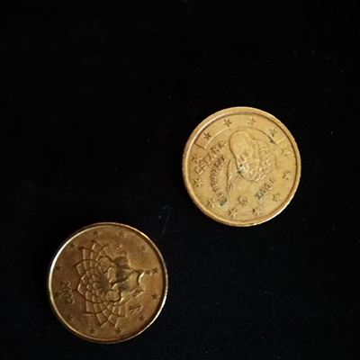
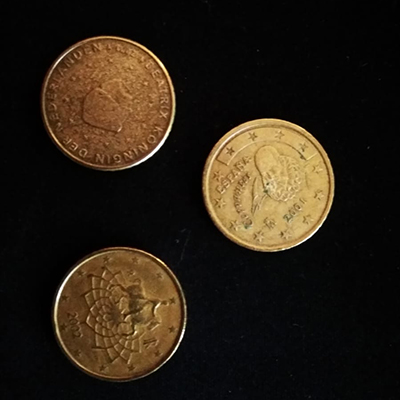
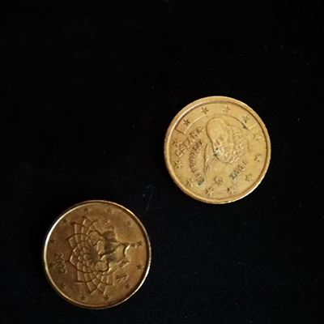
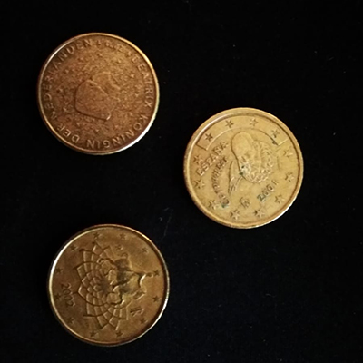

Juego de los Xinos
Es un juego de azar que consiste en intentar adivinar el número total de monedas que varios jugadores (al menos dos) guardan en su mano cerrada. Se utilizan tres monedas por jugador y se pueden sacar 0, 1, 2 o 3 monedas. Gana quien acierta el total de monedas.
 


